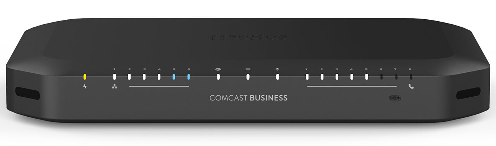
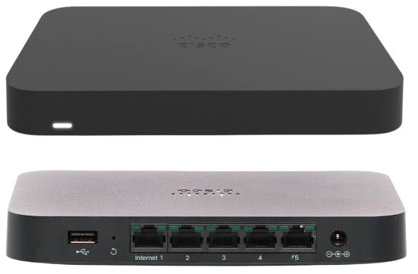
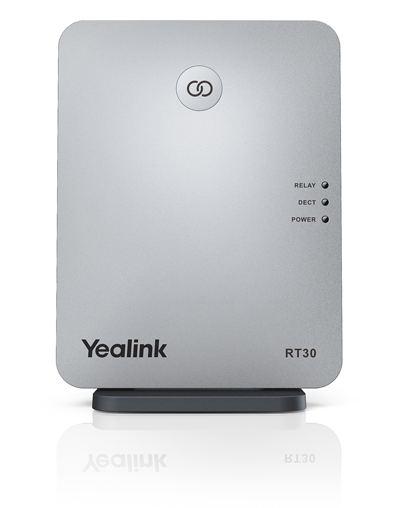

What to do the moment internet, Toast, or phones go down at a location — work the steps in order, and call TSA if the issue isn't resolved.
01 — Internet Down
Internet Down
Confirm it's actually the internet — not just Toast. Test wifi on a computer and a phone. You may see a yellow banner across your terminals, but if wifi on other devices is working fine, that is NOT an internet issue — it's Toast (see Section 02). If wifi on your phone or computer isn't working either, internet is confirmed down.
Location
Provider
Alton
Comcast Business
Boca Raton
Comcast Business
Dixie
Comcast Business
Palm City
Comcast Business
Jupiter
Comcast Business
Clematis
IPFone
Melbourne
Spectrum Business

Internet router — Comcast/Spectrum/IPFone box, per location above
Reset it
1Unplug the power cable to the router for a full minute.
2Plug it back in and wait for it to resync — this can take 5–10 minutes.
3Still down? Search for outages with your internet provider in your area.
4Reach out to TSA immediately.
While internet is down
Use only ONE terminal for everything — ringing in, payments, across bar, servers, and hosts. Never turn that terminal off. All payments will be taken offline on it. Once internet is restored, that terminal syncs sales and payments automatically.
02 — Toast Down
Toast Down
Confirm it's a Toast issue. All terminals showing a yellow banner, but wifi on your phone or computer works fine? This is Toast, not internet.
Check the color
The Toast Router MUST be solid WHITE for the issue to be resolved — that means it's working correctly. Red or blinking means it is still NOT working. Keep going through the steps below until it's white.
Step 1 — Toast Router

Toast Router — the box that goes red/green/rainbow while resyncing
1Is it red or blinking? If so, unplug its power cable for a minute, then plug back in.
2Wait for it to resync (5–10 minutes) — it will blink green and red while it attempts to reconnect.
3If it goes back to red, continue to Step 2.
Step 2 — Wifi Router
1Unplug the wifi router for a resync as well.
2The Toast Router should go rainbow again as it reattempts.
3If it goes back to red, continue to Step 3.
Step 3 — TP-Link
TP-Link — the switch with the row of ethernet cables
1Unplug the power cord from the back.
2Plug it back in (replug).
3Wait for it to resync.
4Check the color of the Toast Router — nothing will work until it stays solid white.
Still down? Call TSA.
03 — Phones Down
Phones Down
Find the repeater — usually located behind the bar or near the phones. If resyncing it doesn't fix the issue, call IPFone's 24/7 support line at (877) 781-6280 and ask them to forward calls to a number of your choice while you sort it out.

Repeater — usually behind the bar or near the phones
1Unplug the repeater's power cable and plug it back in to resync.
2Still down after resyncing? Call IPFone's 24/7 support line for emergencies (number below).
3Let them know your phones are down and request call forwarding to a number of your choice — such as the MOD phone — so no calls are missed. They can configure this quickly on their end.
TSA cannot access these call-forwarding settings directly — IPFone must configure it by phone.
At the end of the night: call IPFone back to reverse the call forwarding.